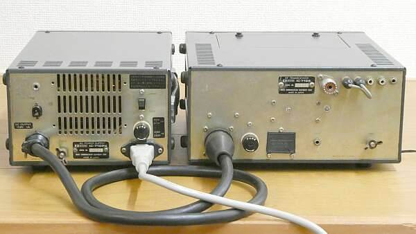
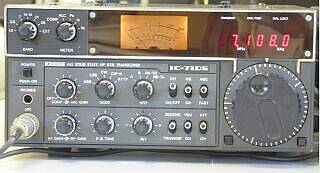
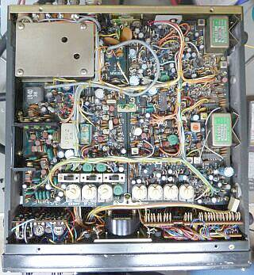
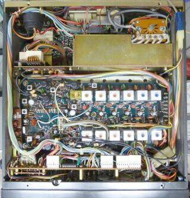
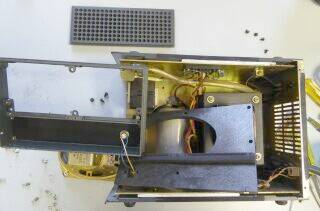
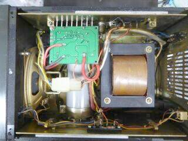
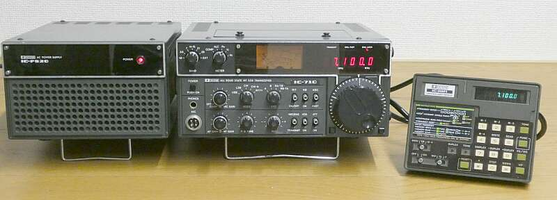

|
| ご紹介するのは１０Ｗモデル ＩＣ-７１０Ｓ本体とスピーカー内蔵電源ＩＣ-７１０ＰＸです |
|
 |
リアパネルの様子です
１０W機ですので、大きなヒートシンクもなく、シンプルそのものです
本体、四角の目隠しがしてあるところが、後述のＩＣ-ＲＭ１接続端子(ＣＩ-Ⅰ）
現在のI/F ＣＩ-Ⅴの始まりは、ここからです |
|
ＶＨＦスタートの現アイコム（当時は、井上電機製作所）のＨＦ参戦は１９６７年発売の、ＩＣ-７００Ｒ ＩＣ-７００Ｔ これが最初の製品ですが、それから時の経つこと１０年、１９７７年に、ＩＣ-７１０というオール・ソリッドステートで、当時としては斬新なデザインの、非常にコンパクトな本格的ＨＦトランシーバを発売しました

ＩＣＯＭ初期のＨＦ機
１９６７年発売のＩＣ-７００Ｔ、ＩＣ-７００Ｒ 後ろは、５００Ｗリニア ＩＣ-２Ｋ
右後ろ下段は、こちらでご紹介のＩＣ-７１０ 上段は、ＩＣ-７２０/７２０Ａ |
 |
アイコム（井上電機製作所）初となるＨＦトランシーバです
どうやら、このデザインがお気に入りのようで、Ｖ／ＵＨＦのマシンまで採用されました
この時代の表示は、７セグメントＬＥＤ、その後は蛍光表示管にと変遷はありますが、同じ型を長く使う･･･その後もこの動きは続きます |
ＨＡＭバンドのみ（ＷＡＲＣバンドなし）対応のマシンで、パスバンド・チューニングを含むトリプルコンバージョン／ダブルコンバージョン＋です
ＣＷフィルタなどオプション設定はありません
ＣＷ時は、パスバンド・チューニングの機能で、帯域を狭めて対応するタイプです
（ＣＷ：±２５０Ｈｚ巾 ＣＷ－Ｎ：±１００Ｈｚ） |
|
本機の大きな特徴として、デジタルＶＦＯの採用があります
今でこそ当たり前になっていることですが、当時としては画期的なことでした（ＰＬＬの採用）
また、バンド切替もメカＳＷに頼らず、ソレノイドでガチャガチャとＲＦフィルタを切り替える方式を採用
切替時には大きな音がします
小型化のためのひとつの手法でしょう、後継のＩＣ-７２０でも採用されています
ＶＦＯはデジタル・タイプで、ステップ当たり１００Ｈｚで１ＫＨｚステップの早送りも可能です
ダイヤル・ロック・ボタンもあります
実際の運用では、１００Ｈｚステップでは少々厳しい感じではあります（あとはＲＩＴに頼る？）
当時としては、このあたりが落としどころだったのでしょう
デジタル化されてはいるのですが、現在と比べると全体の周波数安定度は少し劣ります |
 |
筐体上側です
フィルタは２個 上側が、９ＭＨｚ台 下側が、１０．７５ＭＨｚのクリスタル・フィルタで、この２つを組み合わせてパスバンド・チューニング機能が構成されています
左上のシールドケースの中身は、ＡＬＣユニット
基板は、大きく２枚構成
左半分は、送信ドライブ／ＲＦ部、右半分はＩＦ部です
下の方に見える白い７つ並んでいるものは、半固定ボリュームで、ケース上面にあるナイロン・ラッチ（ポッチ）で止められてある蓋を開けて、任意に調整できるものです
３つのスライドＳＷもそうです
壊れていたナイロン・ラッチは新品に交換しました |
 |
筐体底側です
右上に見えているウェハーが、バンド切替を担うロータリー・リレー部です（電磁コイル／可動部は反対側に隠れています）
シールドケースの中は、各バンド毎のＬＰＦが納められています
左側の黒いコネクタは、電源接続コネクタです
中央に６組見えているシールドケースが、各バンド（６バンド）の段間トランス（コイル）です
バンド毎に独立してあります
その左横の少しスペースが空いて見えるところに内蔵スピーカーが納められるようになっています |
|
| ＩＣ-７１０ＰＸ |
 |
今回入手したものは、かなりたばこの煙で燻された感じがあり、清掃も本格的に行うことになりました
左写真の分解清掃の様子は、スピーカー内蔵電源ＩＣ-７１０ＰＸです
外部スピーカージャックは、接触不良が酷く、交換しました
本体も同様に頑張りました！ |
 |
オリジナルでは、無負荷時１７Ｖ、最大負荷時１３Ｖ前後と、定電圧回路を内蔵していません
単なる整流出力、大容量の平滑コンデンサは採用されています
本体説明書には、この電圧変化に耐える設計がしてあると記載があります
１０Ｗ機ですから４Ａ程度の最大負荷を見ればいいと言うことで、ＳＷタイプの最大８Ａという定電圧回路を組み入れました
端子台など少しレイアウトを変更して基板を内蔵しました
入力電圧が少し低めではあるのですが、１３Ｖにセットして最大負荷時でも１２．５Ｖは出ています |
|
|
| 清掃以外の今回の取り組み（修復）内容 |
全体的に動作レベルの低下が見受けられました
４０年以上経過しているものですから当然でしょう
意外にも、受信だけをピックアップすると、まずまず正常／カタログ値の動作をしています
機械的には、ＲＩＴ ＯＮ／ＯＦＦ-ＳＷが壊れています
こればかりは交換品のアテがないし、機能としても必須ではないので、今回は無視しました（ＲＩＴ動作はしません）
バンド切替動作が不安定
ガチャガチャと動くロータリー・リレーの動作ですが、ご機嫌が良いときは、全く問題ありませんが、ご機嫌を損ねると、切替が出来なくなったり（電源のＯＮ毎に１バンドづつ切り替わる状態に）、突然切替動作をしたりします（これは困ります！）
色々チェックをしてみた結果、機械的な負荷が大きくなっていると判断、リレーの可動部分全てにシリコングリスを塗布、清掃したところ、安定な動作になりました（稼働音も少し大人しくなった！？）
送信パワーがバンド毎に一定ではなく、ＡＬＣ動作もおかしい（２８ＭＨｚ帯を除きレベル表示が不動）
２８ＭＨｚ帯を除き、段間調整が大きくずれていました
きちんと調整することで、ＡＬＣ動作を止めて各バンド２０Ｗ程度得られるようになりました
ここでＡＬＣ調整をして、出力を各バンド１２Ｗに納めました
このことは、説明書にも記載はありません、独断です
あとは、説明書にあるように、ＢＦＯ・ＶＸＯの周波数を合わせました
最終点検結果は、以下の通りです
■受信感度
０．５μＶ／ｅｍｆ入力で、Ｓ／Ｎ１０ｄｂ １．９ ～ ２１ＭＨｚ帯
２８ＭＨｚ帯で、０．６μＶ／ｅｍｆ入力でＳ／Ｎ１０ｄｂ が得られました
４ｄｂμ入力でＳ１、８４ｄｂμ入力でＳ９＋６０ｄｂと、説明書の記載どおりに合わせました
４０ｄｂμ入力で、おおよそＳ９を指示します（２８ＭＨｚ帯はＳ７位）
■送信パワー
１．９～２８ＭＨｚ帯 １２Ｗ前後
７１００ＫＨｚ以上の周波数帯も、送信します（バンド拡張対応問題なし）
７／１４ＭＨｚ帯をワッチしてみましたが、快調に動作します
１４ＭＨｚ帯ダミー負荷で、送信電波、送信音のモニタをしましたが、こちらもそれなりな動作です |
|
 |
こちらは、ＩＣ-７１０（１００Ｗ）モデルに、リモコン ＩＣ-ＲＭ１ をセットしたもの
ＩＣＯＭでは、この時代（１９７０年代）からマイクロコンピュータにより、本体を外部から制御する技術を展開していました
多分ですが、無線機メーカーでは最も早いマイコンの取り入れであったのではないかと思います
ＴＩ ＴＳＭ１０００（４ｂｉｔ）ファミリの採用です
この当時は、バックアップには、ACアダプタが必要でした（不揮発メモリの登場は、多分ですが１９８５年ごろ）
その名残？・・・外部電源ＩＣ-ＰＳ２０のＯＮ－ＯＦＦと、ＩＣ-７１０のＯＮ－ＯＦＦは、別動作でした
外部電源ＩＣ-ＰＳ２０はＯＮのまま、ＩＣ-７１０の電源をＯＮ－ＯＦＦができます
デジタルＶＦＯ（ＰＬＬ）、マイコンによる無線機制御などについては、元ＩＣＯＭ技術ＴＯＰ（ＩＣＯＭ一の特許所有者）のＪＡ３ＦＭＰ櫻井ＯＭによる記事がｗｅｂ上にありますので、興味のある方は検索してみて下さい
ＩＣＯＭのたどった歴史も、技術面から分かります（２０２４年は、ＩＣＯＭブランド６０周年に当たります） |
| 2024.10 |
|
| 20１7．10 ＪＡ４ＦＵＱ |